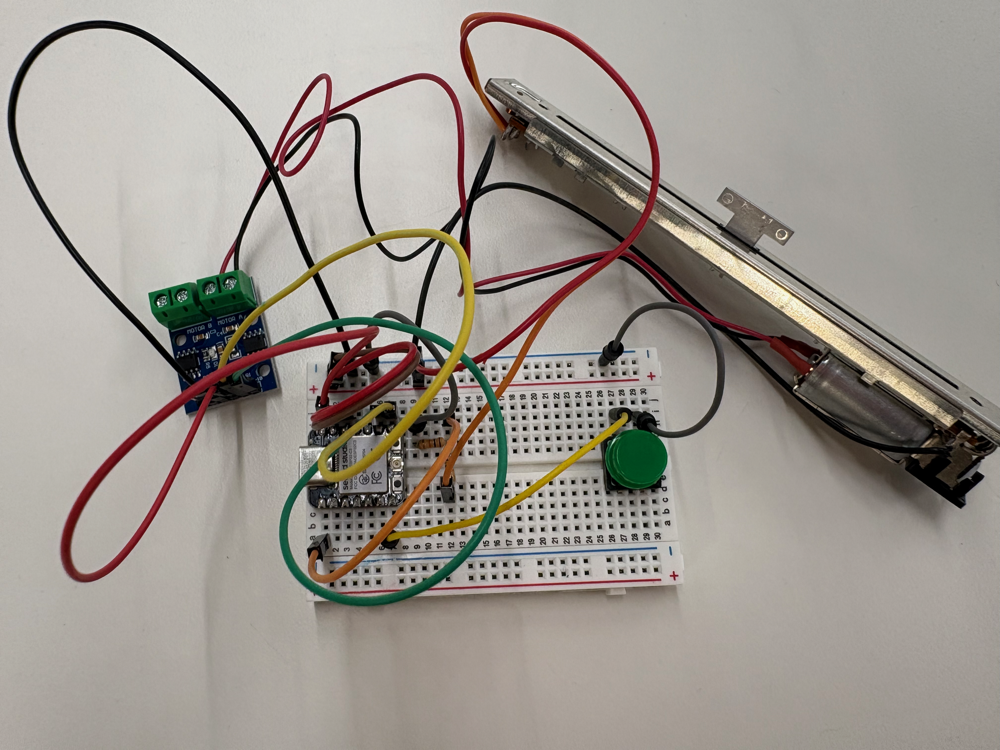
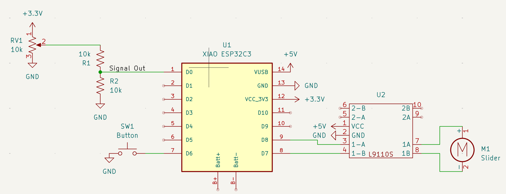

Week 4: Programming
I programmed my Xiao to control a linear potentiometer via a PID controller. In the potentiometer bins, I found a linear potentiometer similar to the ones used on digital audio decks, which had an integrated DC motor that I could use to drive the slider. Because it is a linear potentiometer, I can measure where on the potentiometer the slider is by using it as a variable voltage divider. If I combine that feedback from the potentiometer with a desired position value along the slider, I can control the motor (with a L9110S driver) and know when the slider gets there. In this instance, I used a PID controller (see here for more detail) which I wrote myself with a little help from Claude, as I am not super familiar with C++ syntax. The overall function of the code is that the slider travels to a saved virtual slider position, then unlocks to be adjusted. Next, the user presses a button to switch to another virtual slider, at which point the physical slider moves to the saved position for that slider, then allows the user to adjust.
Code Breakdown:
I started by defining all the pins the program will use, using #define which saves program size. Additionally, I created the PID and set its gains, as well as other variables, including slideVals which stores the saved values for each of the virtual sliders.
bool isHomed = false;
bool prevButton = false;
bool isWaitingtoHome = false;
int slideNum = 0;
int slideVals[NUMSLIDES] = {120}; //init as 120 array
int prevPos = 0;
unsigned long lastUpdate = 0;
unsigned long targetWaitTimer = 0;
PID pid(4,0,0,-110,110);
In the loop, the Xiao first reads the current slider position, using a filtered average to reduce input noise (and therefore increase accuracy). I got this algorithm from Claude in the process of debugging my controller, it reads twice in a short span and weights inputs from both reads to reduce error. Additionally, I then map the value from the analogRead, which is 0-2050, to the 0-255 standard 8-bit integer. The reason it is 0-2050 and not 0-4096 is that I found that the analogRead on the Xiao saturates at about 3-3.1V rather than 3.3V, so I had to cut the voltage in half so there would be no input saturation (and thus a zone of different positions where the output is the same).
static float filtered = analogRead(A0);
filtered = 0.8f * filtered + 0.2f * analogRead(A0);
int curr = map((int)filtered, 0, 2050, 0, 255);
The next part of the code changes the active virtual slider when the button is pressed, and resets the PID since the setpoint changed, and to clear any integral wind-up in the PID controller.
if(digitalRead(BUTTON) != prevButton){
prevButton = !prevButton;
if(!prevButton){
//increment and reset the slider number
slideNum++;
pid.reset();
isHomed = false;
if(slideNum >= NUMSLIDES){
slideNum = 0;
}
}
}
Next, the current position of the slider is fed into the PID controller, and an output -255 to 255 is obtained. There is a feedforward term of 145 added, which is the base amount of input required to move the slider at all. Then, the calculated output is used to control the slider, depending on if it is negative or positive.
if(!isHomed && output < 0){
analogWrite(SLIDEA, 255+((int)(output)));
digitalWrite(SLIDEB, HIGH);
} else if(!isHomed && output > 0){
analogWrite(SLIDEA, ((int)output));
digitalWrite(SLIDEB, LOW);
} else {
analogWrite(SLIDEA, 0);
digitalWrite(SLIDEB, LOW);
}
Finally, the code checks whether the slider is at the set position, and if it is, it stops trying to move the slider and allows the user to modify its value.
if(!isHomed && abs(curr-slideVals[slideNum]) < 2 && abs(curr-prevPos) <= 1){
if(!isWaitingtoHome){
targetWaitTimer = millis();
isWaitingtoHome = true;
} else{
if(millis()-targetWaitTimer > HOME_WAIT){
isWaitingtoHome = false;
isHomed = true;
}
}
}
Circuit Diagrams and References



Schematic of the image, made in KiCAD
Finally, here's a video of the circuit in action:
Here's the link to my code. Additionally, here's the download for the CPID class I wrote for controlling the slider, used in the code: CPID.zip.